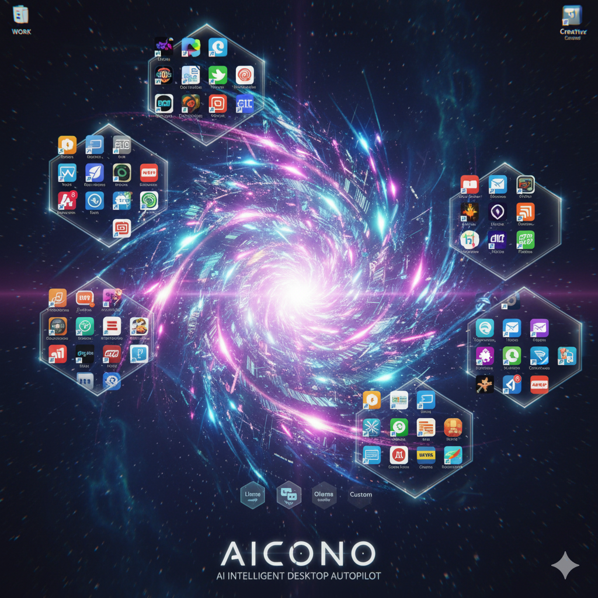
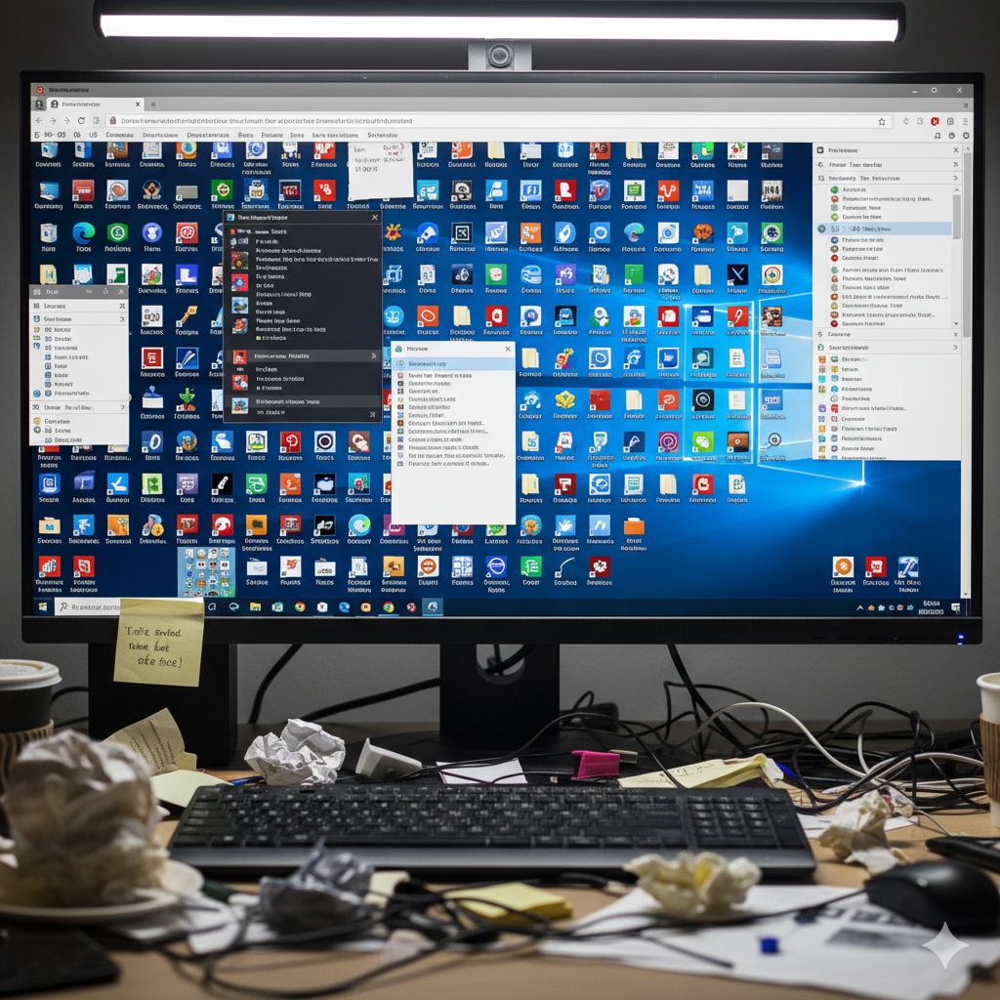
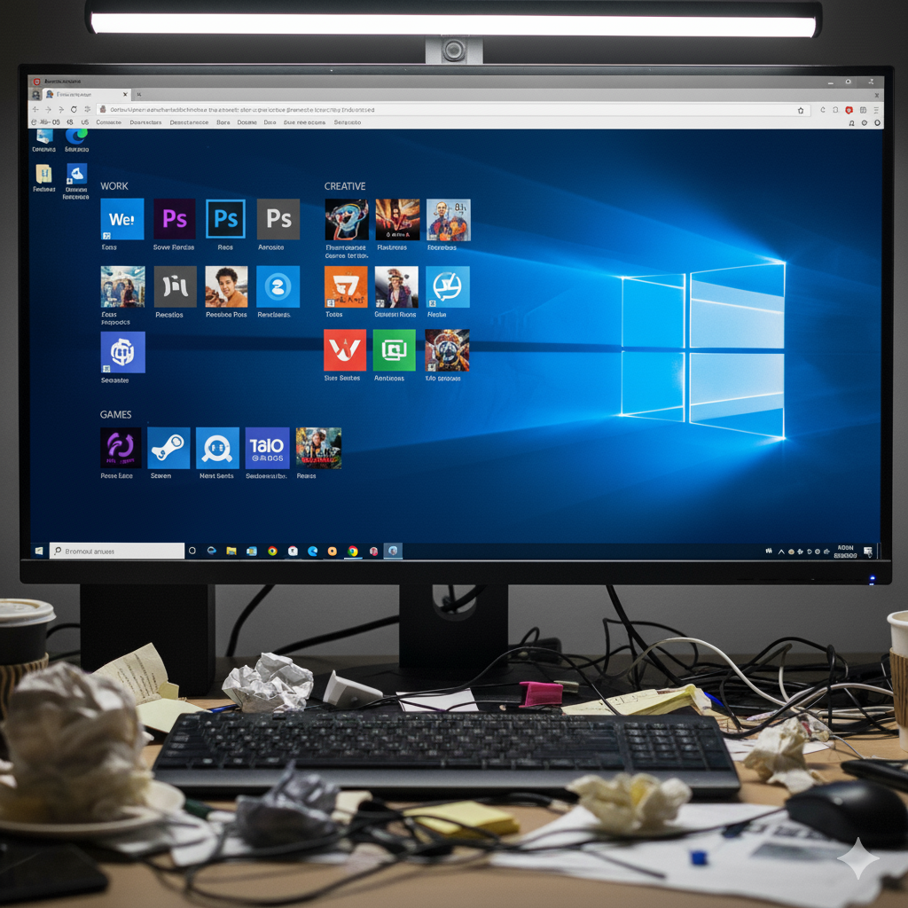
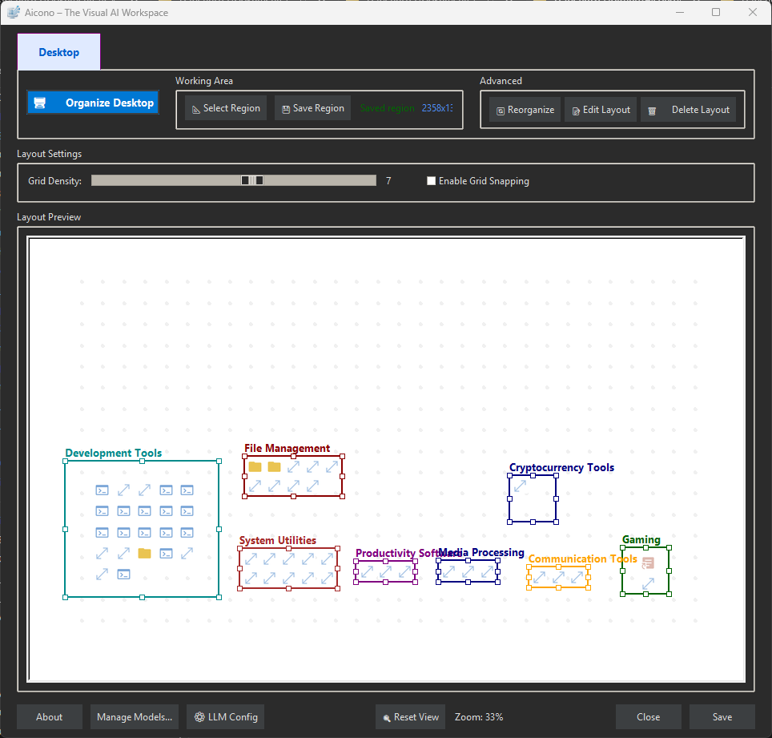
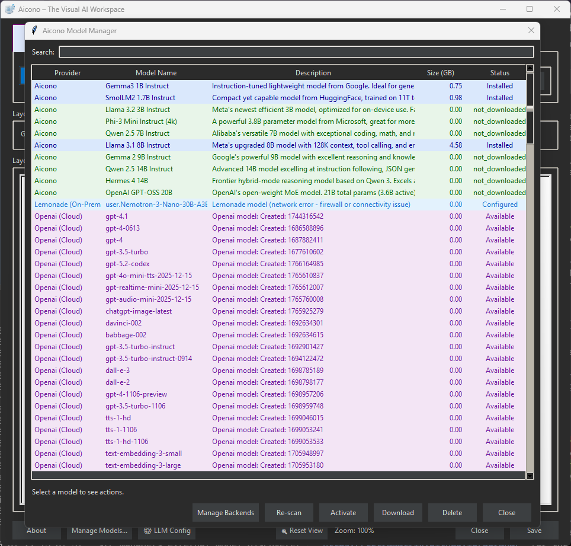
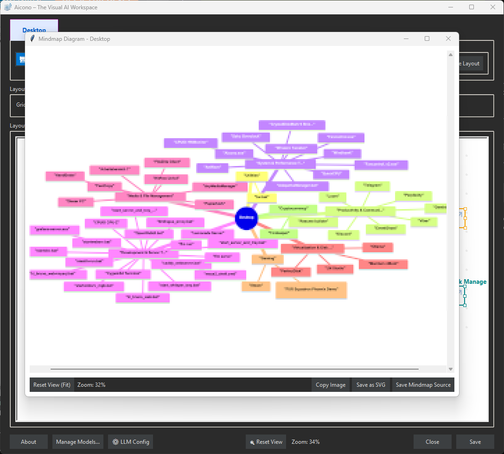

Aicono
An AI-powered desktop icon organizer for Windows

What is Aicono?
Aicono is a Windows application that uses AI to group desktop icons by category (such as "Work," "Games," or "Utilities") and arranges them without overlaps in a customizable area. The layout can be fine-tuned using a visual preview tool.
Key Features
- AI-Powered Grouping: Automatically categorizes icons logically into groups like Work, Games, and Utilities.
- Spatial Layout: Aicono positions icon groups, ensuring each group is cohesive, clearly separated, and fits within your custom "Working Area" without any overlaps.
- Customizable Area: Select specific desktop regions for icon placement.
- Visual Preview (WYSIWYG): See and approve the new layout before any changes are applied.
- Full WYSIWYG Canvas Editor: Direct manipulation of workspace elements. Drag and drop icons between groups, rearrange groups, rename items, and adjust group boundaries with a visual interface.
- Advanced Model Management: Connect to multiple cloud, on-prem and local LLM backends including OpenAI, Mistral, Lemonade, Llamacpp, LM Studio, Ollama and mnany other compatible services. The model manager lists all available models and allows users to activate or deactivate models as needed for specific tasks.
- Local and On-Prem Services: Lemonade, Llamacpp, LM Studio, Ollama and other self-hosted LLM solutions
- Cloud Services: OpenAI, Mistral, Gemini and other cloud-based AI platforms
- Flexible Configuration: Switch between different AI backends based on your needs, privacy requirements, and performance considerations
- Fully Configurable: All settings, from AI models to layout, are adjustable through the interface.
- Portable App: No installation required – just run and go.
- Freeware: Free community edition.

Cluttered desktop before using Aicono – icons scattered everywhere!
Desktops get messy fast with icons everywhere. Manual organizing is tedious, and Windows' basic auto-arrange doesn't cut it.

Organized desktop after Aicono arrangement – AI groups and arranges icons perfectly!
Aicono applies AI-based categorization (e.g., Work, Games, Utilities) and a spatial layout that avoids overlaps, placing icons within your selected desktop area. You can preview and apply the arrangement.

Aicono's main window – control your desktop organization with ease!

Aicono's model manager – configure AI models with ease!

Aicono's mindmap visualization – see your desktop organization in a diagram!
Visual Fine-Tuning with WYSIWYG Editor 🆕 NEW
Aicono features a full visual editor that allows you to fine-tune your desktop organization with a drag-and-drop interface. If the AI does not classify an icon as desired, you can now adjust the results visually with our intuitive drag-and-drop editor:
- Drag & Drop Icons: Simply drag icons between groups to reclassify them. For example, if the AI placed Steam in Work, just drag it to the Games group.
- Resize & Reposition Groups: Adjust the size and position of icon groups directly on the canvas.
- Rename Groups: Click on group names to rename them according to your preferences.
- Visual Feedback: See changes in real-time as you make adjustments to your desktop layout.
Visual Editor Features
The WYSIWYG canvas editor provides:
- Real-time drag-and-drop reorganization
- Visual boundary adjustment for groups
- Renaming of groups and items
- Preview of changes before applying
- Automatic saving of your customizations
🧠 AI Model Performance & Results
Aicono uses AI models to intelligently group desktop icons based on semantic meaning and logical relationships. The built-in default model is lightweight and works offline, but may not always classify icons perfectly, especially for less common applications, which can lead to "hit-or-miss" results. For optimal performance, we recommend using Llama 3.1 8b Instruct or higher models. Processing time depends entirely on the number of desktop icons - fewer icons mean faster processing times. Advanced users can leverage the full-featured model manager to connect larger or custom models for improved accuracy, but this may require more system resources. Naturally, the best performance is achieved with cloud services.
Model Management
Built-in Models: Range from 1B parameter (806MB) to 20B parameter (17-18GB). The smallest model (~806MB) is downloaded on first run and works fully offline. It is fast, but may sometimes classify complex icons as "Miscellaneous". For significantly better results, we recommend Llama 3.1 8b Instruct or higher models.
AI Integration: Supports connection to both on-prem and cloud-based AI services:
- Built-in Models: Pre-configured models accessible through the model manager.
- On-Prem Services: Lemonade, Llamacpp, Ollama, and other self-hosted LLM solutions
- Cloud Services: OpenAI, Mistral, and other cloud-based AI platforms (paid services provide the best performance)
- Configuration: Switch between different AI backends based on requirements
Hardware Requirements
- Built-in Models: Range from 1B parameter (806MB) to 20B parameter (12-16GB)
- Recommended 8B Models (e.g., Llama 3.1 8b Instruct): Minimum 12 GB RAM or 8 GB VRAM for smooth operation
- Hardware Requirements Increase with Model Size: Larger models with more parameters require higher specifications
- Cloud Models: No local hardware requirements (requires internet connection)
Note: Larger models can provide better grouping, but require more memory and processing power. Processing time is directly proportional to the number of icons - fewer icons result in faster processing.
Installation & Setup
Simple setup process:
- Download: Get
Aicono.exe. - Launch: Double-click the file and wait for the main window.
- Configure:
- In Model Manager, select your AI model.
- In main window select working area.
- Run:In main window click Organize Desktop.
System Requirements
| Component | Minimum |
|---|---|
| OS | Windows 11 (64-bit) |
| 🧠 AI Support | Built-in models or on-prem/cloud AI services |
| 💾 RAM | ≥ 4 GB |
| 💽 Storage | Minimum 2 GB (app + model) |
| ⚡ Rights | Standard user |
🚀 Ready for an Organized Desktop? 🚀
Configuration Tips
Aicono offers extensive configuration options. Here are key tips to help you achieve optimal results.
1. REQUIRED: Disable Windows "Auto-Arrange"
Aicono needs full control to move your icons. If Windows is also trying to manage them, your layout will break or won't apply correctly.
To check this: Right-click your Desktop > go to "View" > and make sure "Auto-arrange icons" is UNCHECKED.
2. Balancing Your Working Area and Grid Controls
Think of the "Working Area" as a boundary to contain your icons. Its only job is to ensure icons don't go outside the boundaries you set.
The "Grid Size" control determines how your icon groups will fit inside that boundary with snap-to-grid auto-arrange functionality.
There is no single "right" setting! The best layout is a balance between the size of your boundary and the grid controls you choose. If things look cramped, try adjusting the grid size to give icons more room.
Experiment with the WYSIWYG (What You See Is What You Get) preview. Adjust the grid size and watch your layout change in real-time. You can also fine-tune your layout with the visual editor — simply drag and drop icons between groups, resize and reposition groups, or rename items to reorganize as needed.
Support & Donations
Join our Discord community
If you find Aicono useful, please consider leaving a review or starring the project on

☕ Buy me a coffee or support via PayPal or Bitcoin Cash!

Bitcoin Cash (BCH)
📌 Bitcoin Cash (BCH)

bitcoincash:qrvhk77ujevd9n7jse4jewm99eg95at7tvc6m9v2vv
🔥 Featured on Microsoft Store:


Related Projects
Check out our other products and tools:
- 🚀 Spaceship - Retro Arcade Mini Game
- ⚡ RyzenZPilot - AMD Ryzen Power Management
- 🤖 Sorana - Visual AI Workspacer
- 🧩 TabNeuron - AI Spatial Tab Manager & Research Workspace
New Spaceship - Retro Mini Game:
Featured on itch.io:

Featured on IndieDB:

RyzenZPilot - Dynamic Power Management Tool:
Featured on AlternativeTo:
Featured on Producthunt:
Sorana - The Visual AI Workspace:
Sorana is an AI-powered visual workspace that transforms how you organize and interact with digital files.
Homepage: